50-1000 гостей · в ресторане, в лофте
Обложки корпоративов, круг 2
Один сценарий, «Чикаго 30-х: бар по паролю», в четырёх стилях. Сначала референсы: обложки роликов Никиты на YouTube-канале Каталиста. Потом четыре обложки в живых карточках страницы /korporativ/.
Мой выбор: 1, запасной 3. Номер 1 ближе всего к тому, что ты просила: рваные буквы и стикеры как у Никиты. Его эффект держится на лице крупным планом, а в кадре Чикаго лица нет. Для боевых обложек нужны кадры с людьми. Номер 3 работает на любом фото и совпадает со стилем баннеров.
Референсы: обложки Никиты
12 настоящих обложек с канала youtube.com/@catalystrussia (maxresdefault, i.ytimg.com). Клик по картинке открывает ролик. Ролик «Range Rover» на канале не нашёл: среди 70 просмотренных роликов его нет, поэтому разбор по четырём коллажам и серии «Формула 1».
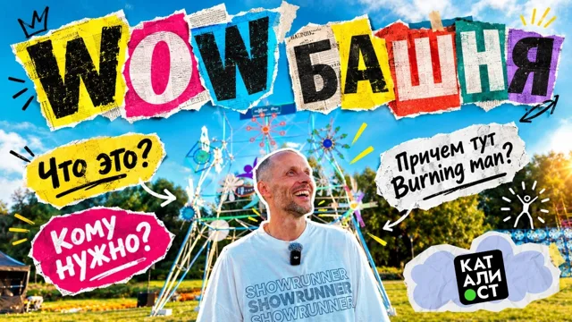
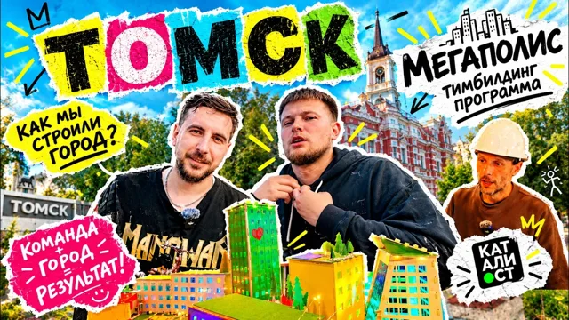
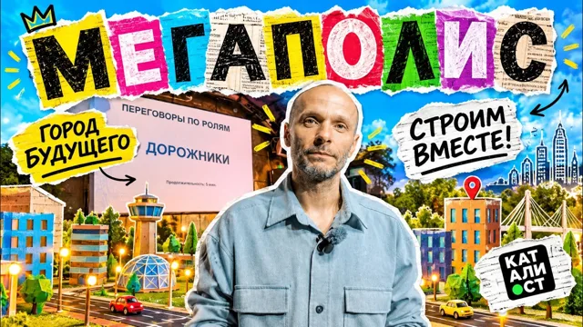
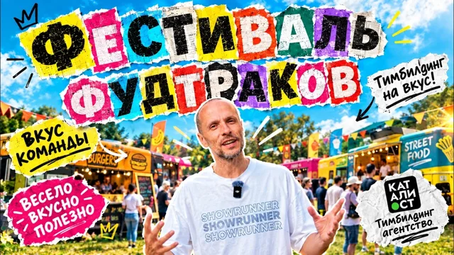
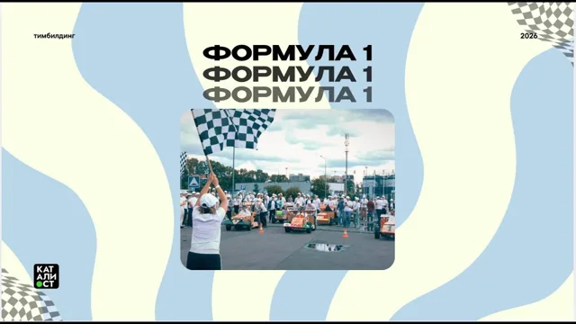
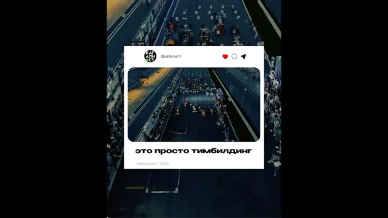
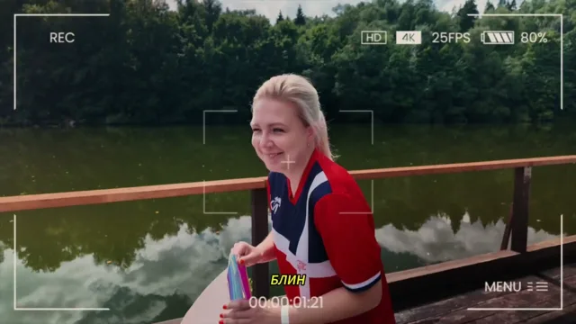
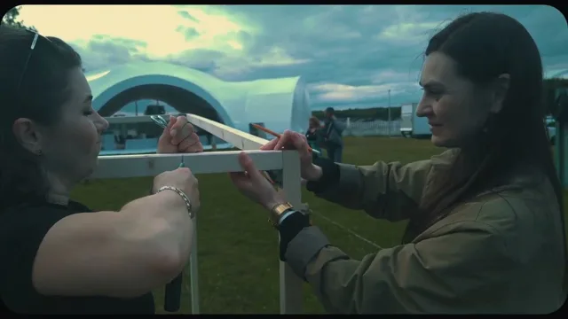
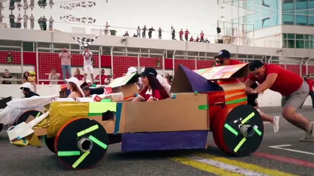
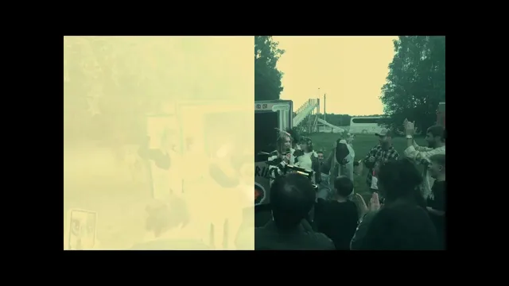
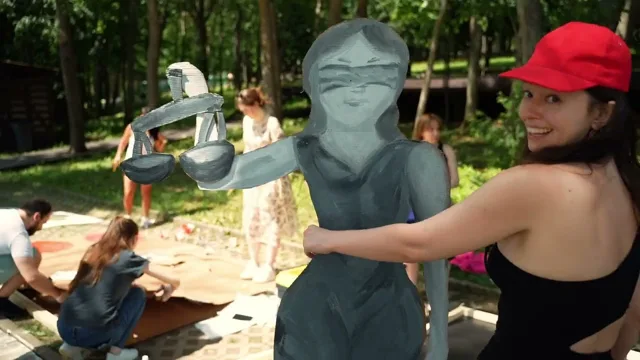
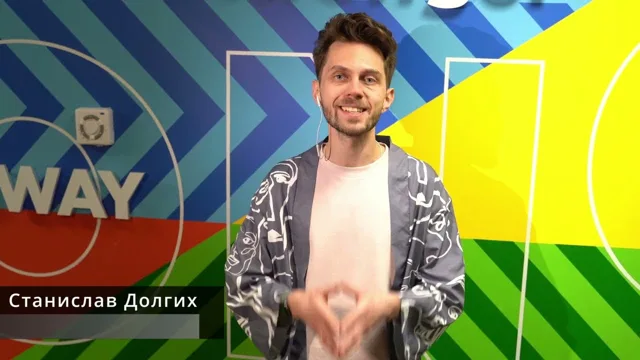
Из чего сделан стиль Никиты
- Заголовок. Одно или два слова крупно. Каждая буква на отдельном рваном клочке: жёлтый, розовый, белый, голубой. Буквы чёрные, у клочка белая кайма и тень.
- Человек. Вырезан по контуру с белой обводкой, стоит по центру и смотрит в камеру, улыбается или говорит. Это главный носитель эмоции.
- Фон. Яркое насыщенное фото программы без затемнения: город из картона, фудтраки, башня.
- Стикеры. Три или четыре рукописных надписи на клочках: вопрос-зацепка («Как мы строили город?», «Кому нужно?»), короткий итог, стрелки, коронки и значки-каракули.
- Логотип. Фирменный знак «Каталист» наклейкой внизу справа.
- Спокойная серия. Кремовый фон, цветные волны, заголовок три раза подряд, фото в скруглённой рамке, логотип внизу слева.
Как читать карточки
Заголовок на карточке сайта убран: на обложке уже крупный текст, и повтор выглядит лишним. Остались строка про гостей и стрелка. Плашки цены нет: её убрали 25.11. Обложка квадратная, в высокой карточке видна средняя часть по ширине, в обычной средняя по высоте, поэтому весь текст лежит в центре.
1Никита: коллаж на ярком фото
Как «Томск», «Мегаполис» и «WOW Башня»: рваные буквы, стикеры-вопросы, кроны-каракули.
Плюсы: самый близкий к роликам Никиты; название и вопрос-зацепка читаются сразу, стикер «Кто сдаст дона?» берёт из описания сценария.
Минусы: в кадре нет лица, поэтому нет живой эмоции, как у Никиты; для сильного эффекта нужен кадр с человеком крупным планом.
Сама обложка (1:1)
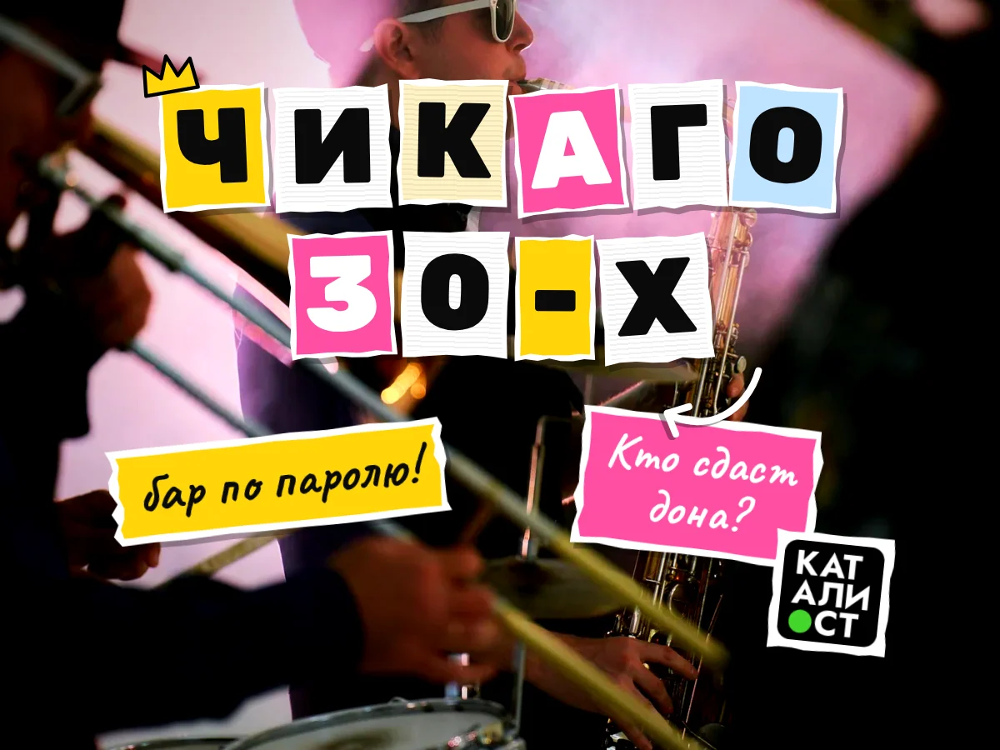
Высокая карточка, как первая на сайте
Обычная карточка
50-1000 гостей · в ресторане, в лофте
2Никита: спокойный, как «Формула 1»
Кремовый фон, цветные волны, заголовок трижды, фото в скруглённой рамке, стикер.
Плюсы: чистый и лёгкий, хорошо стоит рядом с фото-карточками сайта; фото видно целиком.
Минусы: фото в рамке небольшое; в тесной карточке заголовок-тройка мельче, чем у остальных.
Сама обложка (1:1)
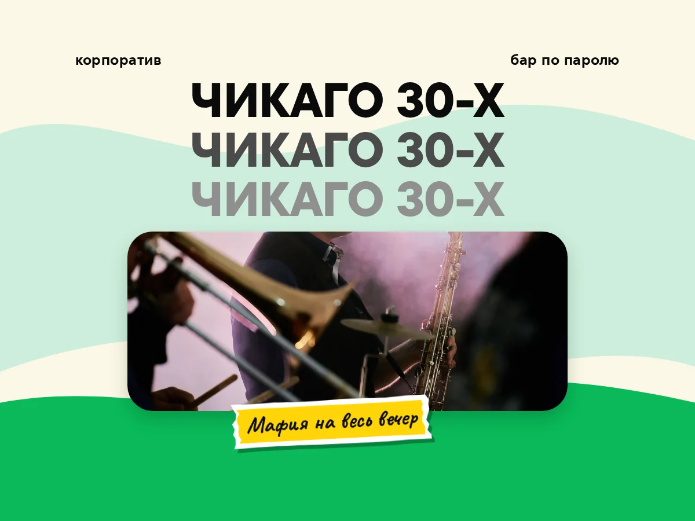
Высокая карточка, как первая на сайте
50-1000 гостей · в ресторане, в лофте
Обычная карточка
50-1000 гостей · в ресторане, в лофте
3Светлый со смайликом, как наши баннеры
Канон баннеров: светлая панель, заголовок капсом, зелёная плашка, фото снизу, смайлик (без новогоднего декора).
Плюсы: один язык с рекламой и будущими обложками (8 Марта, шатры); текст чёрный на светлом, читается в любой карточке.
Минусы: самый спокойный из четырёх; верх обложки без картинки.
Сама обложка (1:1)
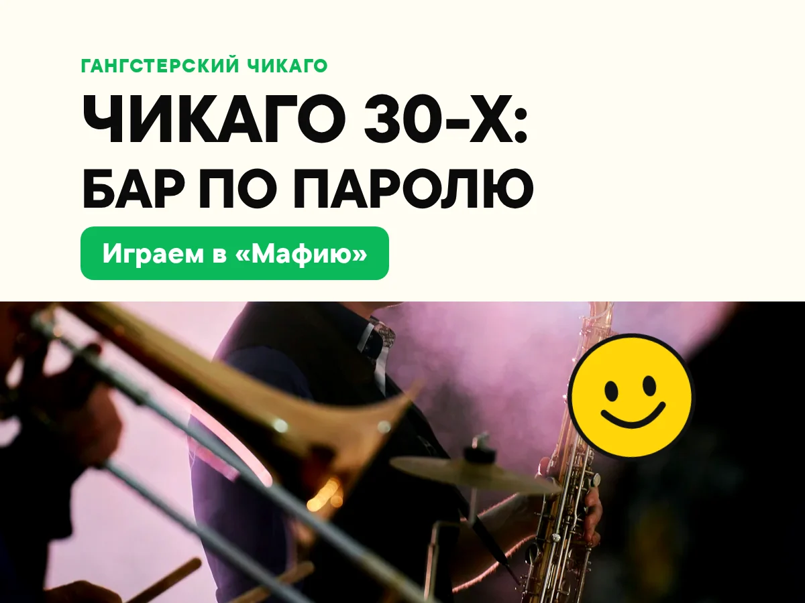
Высокая карточка, как первая на сайте
50-1000 гостей · в ресторане, в лофте
Обычная карточка
50-1000 гостей · в ресторане, в лофте
4Крупная типографика, доработанная
Круг 1, №6: тот же ход, но теперь на реальном фото в тени, гигантское «30-х» и зелёная полоса.
Плюсы: максимум читаемости в мелкой карточке и в высоком слоте; $0 и собирается за минуту под любой сценарий.
Минусы: самый «шрифтовой»; от стиля Никиты и баннеров дальше всех.
Сама обложка (1:1)
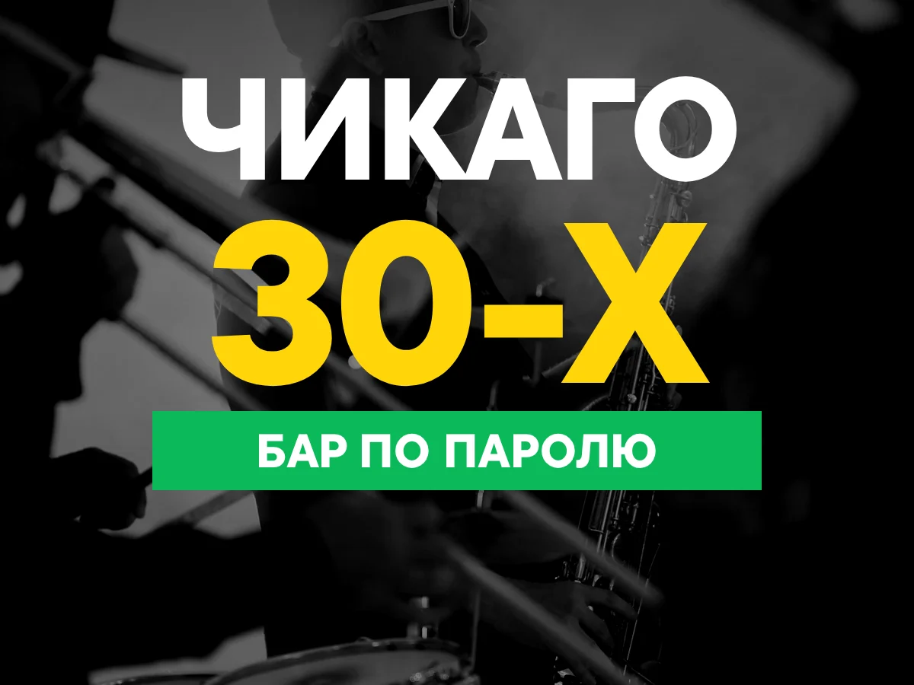
Высокая карточка, как первая на сайте
50-1000 гостей · в ресторане, в лофте
Обычная карточка
50-1000 гостей · в ресторане, в лофте